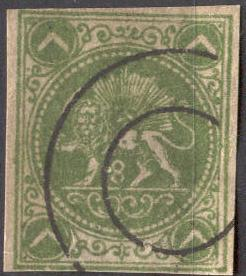
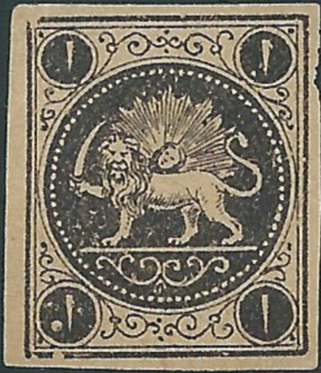
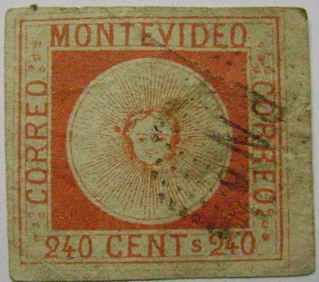
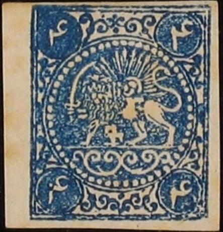
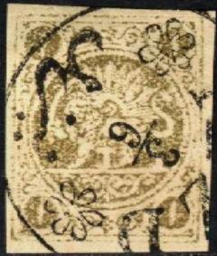
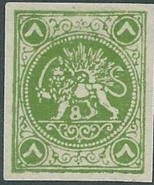

Fournier forgeries and forged cancels (taken from a 'Fournier Album of Philatelic Forgeries') with peculiar dot cancels, reduced sizes.
Return To Catalogue -
Persia 1868 issue, Boital reprints -
Persia 1868 issue, forgeries, part 1 -
Persia 1868 issue, forgeries, part 3 -
Persia (Iran) 1868 issue
Note: on my website many of the
pictures can not be seen! They are of course present in the
catalogue;
contact me if you want to purchase the catalogue.
More information about stamps from Persia, forgeries etc. can be found on: http://www.persi.com/fakes/fakes/fake.html, http://fuchs-online.com/iran/lions-03.htm or http://www.iranphilatelic.org/scams.htm. Also the book of Friedrich Schuller 'Die Persische Post und de Postwerthzeichen von Persien und Buchara' has much information.
For Persia 1868 issue, forgeries, part 1, click here or Persia 1868 issue, forgeries, part 3.
Fournier forgeries and forged cancels (taken from a 'Fournier
Album of Philatelic Forgeries') with peculiar dot cancels,
reduced sizes.


Possibly similar forgeries as those from the Fournier Album. The
'4' of the 4 ch is open on top (all genuine types are closed on
top)
Blocks of four of these forgeries.

Apparently the same forgery type; left Fournier (dot cancel),
right Spiro (typical Spiro cancel).
Spiro forgeries:
Some Spiro forgeries, note the strange cancels, reduced size.
These forgeries are different from the above shown Fournier
forgeries. The "4" and "8" are different.
Spiro forgeries have many different (bogus) cancels on the same sheet (see example above, they are also sometimes referred to as Hamburg forgeries). I have also seen the 1 c black and the 2 c blue of this particular Spiro forgery (with the same weird cancels and a cancel consisting of parallel lines). They are printed in sheets of 5x5 stamps.

The 8 ch in the 'different type'.



Forgeries one without and the others with 'bogus' cancels. They
are usually on yellow paper. According to the site
http://commons.wikimedia.org/wiki/File:Iran_1868_Sc2_fake.jpg,
this forgery is lithograhed (instead of engraved), the lion's
nose is open on top and there is no color dot in the lion's tail.
Also note the white body of the lion. I've seen some bogus stamps of Paraguay with the same
"PNo" cancel as shown on one of the forgeries above.

Bogus issue of Paraguay (incidentally also with a lion) and a
forgery from Uruguay, with the same bogus cancel "PNo"
as seen on one of the forgeries shown above.


Forgery of the 4 ch blue value, but with '2's in the corners.
This is probably the forgery mentioned in the Serrane guide. It
might have been made by the same forger who made the above 2 ch
green stamps (which appear to be much more common than this
forgery)

Two primitive forgeries of the 4 K blue and 4 K yellow. The '4'
is very fat. There are many other differences when compared to
genuine stamps.


Forgeries with '2' slanting backwards.


8 ch green forgery which does not correspond to any of the four
genuine types.


This 8 ch red forgery should not have an "8" between
the lion's legs.

Is this the same forgery, but with the "8" erased?
All the next stamps have cancel "YEZD * 3/6", they are probably all forgeries:



Note that this cancel also exists genuinely used. Note that the 5
K violet has a "5" between the legs of the lion
(genuine stamps don't have this). The 4 ch orange stamp is
clearly a Boital reprint (it has a very large white scratch under
the lion).
Here a block of four stamps with what I presume is a genuine
cancel of "YEZD".



The same set of fakes(?), but now uncancelled. Note the
"5" in the 5 K values. Also note the missing pearl (at
about 2 o'clock) in the 1 K red and 1 K red on yellow stamps (the
1 ch black also appears to have the same defect). I've seen the 1
K and 5 K values printed together in a sheetlet of eight 1 K and
eight 5 K stamps (in columns of four stamps). Also a 8 ch and 2
ch pair.
More deceptive 'reprint', these stamps were never issued in sheet
of 10, although the original types
appear to have been used.
The book 'Lions of Iran' by Mr. Mehrdad Sadri seems to be quite useful in determining forgeries of these stamps. This book also gives descriptions of essays etc. (I have not read this book myself).
Persia 1868 issue, forgeries, part 3.
{kind=link}
{kind=link}
{kind=link}
{kind=link}
{kind=link}
{kind=link}
{kind=link}